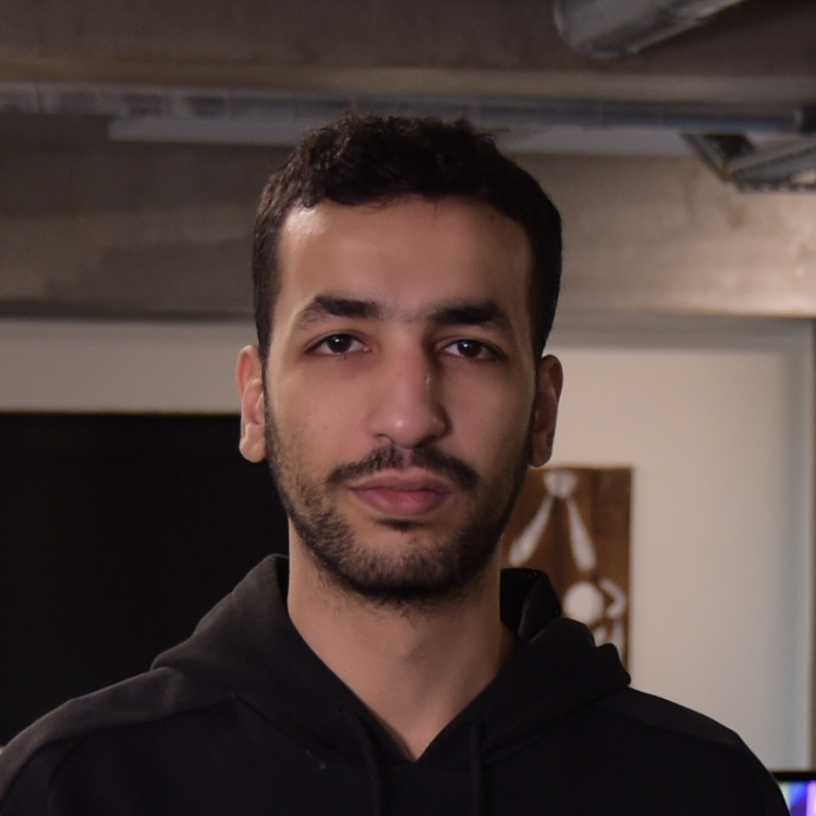
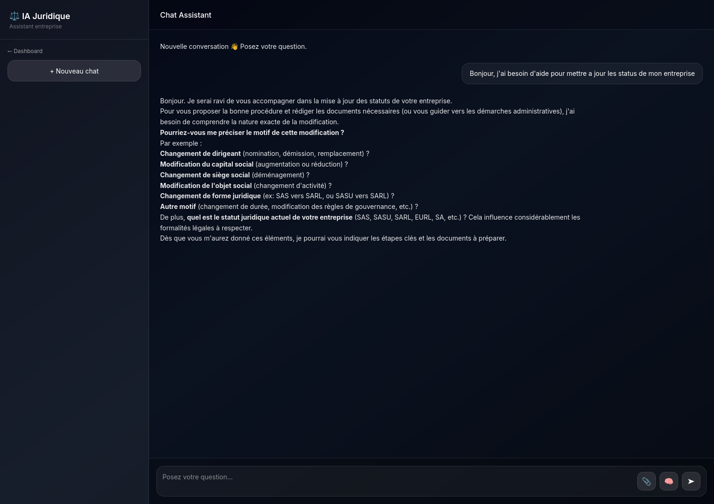
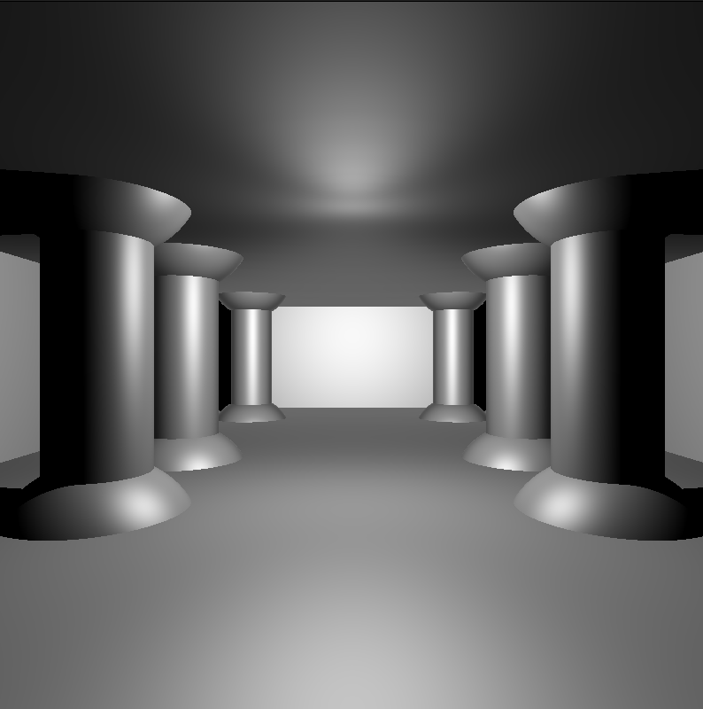
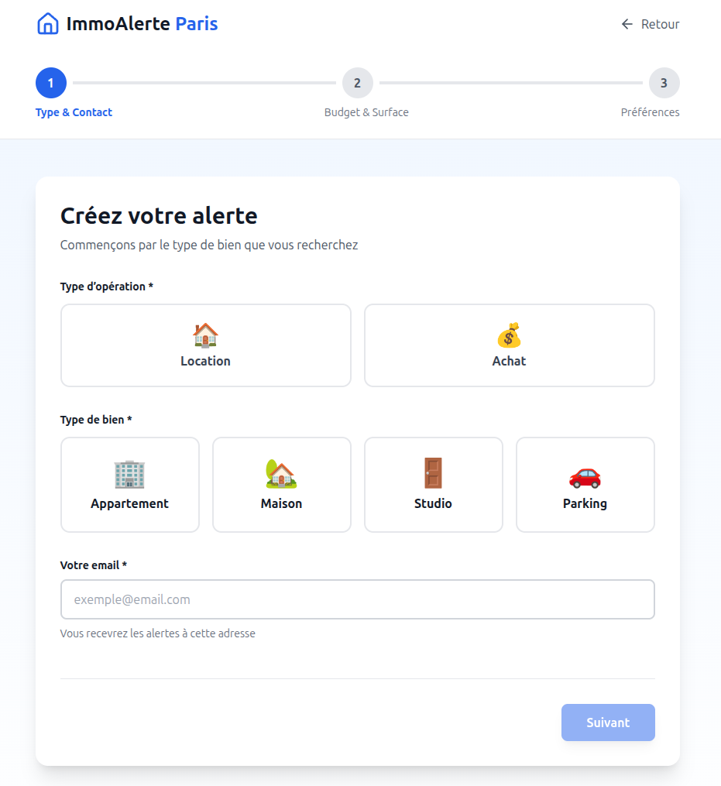

Je conçois des services backend robustes et scalables, avec une approche orientée architecture. Je travaille principalement avec Node.js et Python pour développer des APIs, des systèmes temps réel et des plateformes intégrant des modèles d’intelligence artificielle. Mon objectif est de construire des systèmes fiables, maintenables et adaptés à des environnements de production.

Développeur orienté backend, je m’intéresse à la conception de systèmes performants et bien structurés. Je privilégie des architectures claires, une bonne séparation des responsabilités et un code maintenable sur le long terme.
J’ai l’habitude de travailler avec Node.js, Python et des bases de données SQL/NoSQL pour développer des APIs, des services temps réel et des outils backend. J’utilise également Docker pour structurer les environnements et faciliter le déploiement.
Je développe actuellement des projets autour des systèmes LLM (Large Language Models), avec des architectures incluant streaming, gestion de conversations et intégration de données (RAG). Je continue de progresser à travers des projets concrets et des formations comme CS50 et le cursus de l’École 42.

Plateforme backend permettant de gérer des interactions avec des modèles de langage (LLM) en temps réel. Architecture orientée services avec abstraction des providers (Ollama, vLLM), streaming via WebSocket et gestion des conversations. Intégration en cours d’un système RAG pour enrichir les réponses avec des données externes.
Projet en cours

Ray tracer développé en C avec rendu 3D de scènes complexes. Implémentation des calculs d’intersection, gestion des lumières et des ombres, et optimisation mémoire. Projet axé sur la rigueur algorithmique, les performances et la compréhension des systèmes bas niveau.
Voir une démo

Plateforme d’alerte immobilière permettant de rechercher des biens selon des critères précis et de recevoir des notifications automatisées. Développement d’un moteur de recherche dynamique avec filtres et d’un backend de traitement pour la gestion et l’envoi des alertes.
Visiter le site
Disponible pour alternance / opportunités backend
📧 ouaguenouni.samih@gmail.com